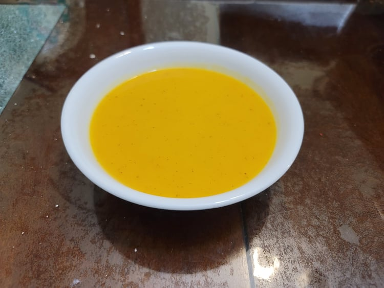

Squash and Apple Soup

Ingredients:
- 2 lb any Winter squash, peeled and cubed
- 1 Tart apple, peeled and chopped
- 2 tbsp Sunflower oil
- 1 Wild onion or 1/4 cup Shallots, chopped
- 1 cup Cider
- 3 cups Corn stock or Vegetable stock
- 1 tbsp Maple syrup, or to taste
- Salt, to taste
- Sumac, to taste
- Optional: Cranberry sauce
Instructions:
- In a large pot, heat the oil over medium heat. Add in the squash, apple, and onion and sauté until the onion becomes translucent, about 5 minutes.
- Stir in the cider and stock and bring to a boil over high. Reduce the heat to low and let cook for about 20 minutes or until the squash is very tender.
- Use an immersion blender to blend the squash, apple, and onions into the soup. Season with maple syrup, salt, and sumac to taste.
- If using, serve with a dallop of cranberry sauce.